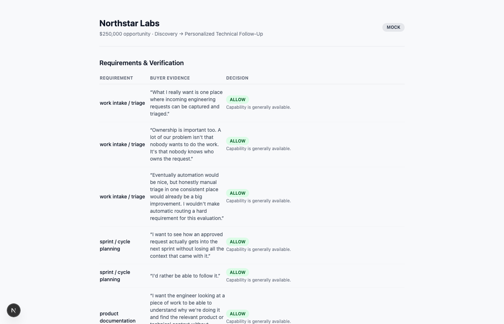
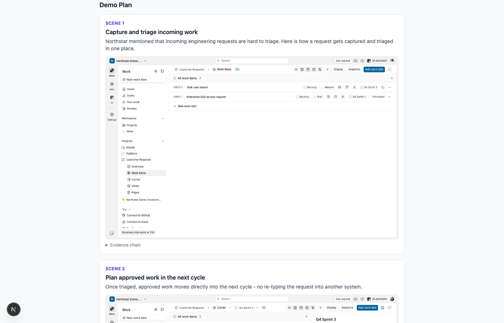
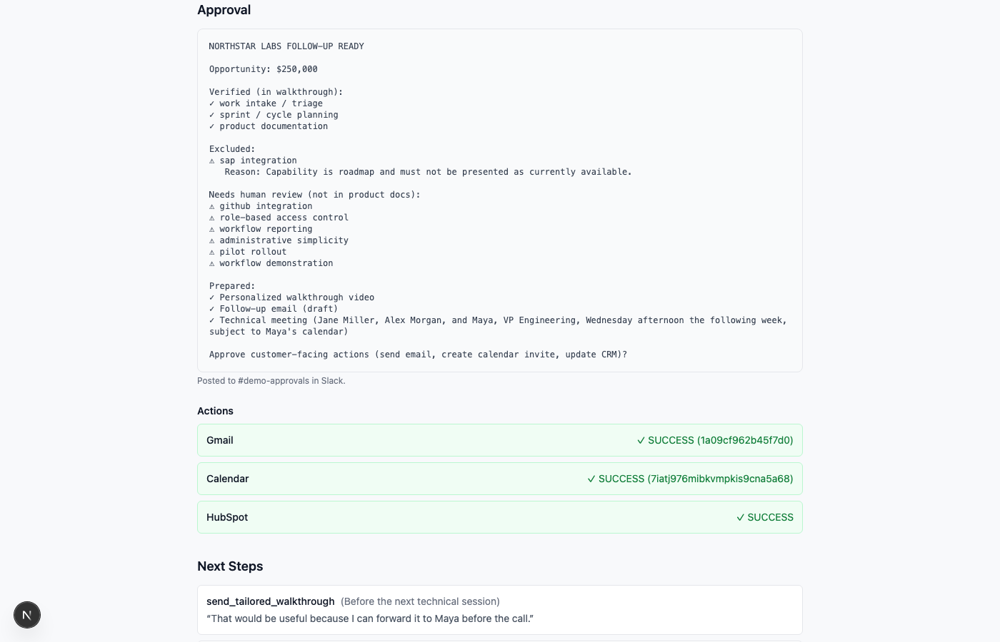

“I definitely want to understand whether you integrate with SAP... I just need to
know rather than seeing something in a demo that turns out to be roadmap.”
— Jane, real discovery call transcript
Verified Discovery-to-Demo Agent
Step 1
Verify before you personalize
The agent extracts requirements, then verifies each one against real product
documentation — before generating anything.

Step 2
Only verified capabilities become scenes
Captured live, in real time, from the real seeded product — not a mockup.

The Generated Walkthrough
Step 3
Nothing customer-facing without approval
Once approved: a real email sends, a real calendar invite is created, a real CRM record
updates.

Reliability
12 / 12
deterministic policy evals passing
3 real bugs found and fixed by testing against the live LLM and live services — not
just mocks.
A Solutions Engineer that never claims what it can't verify —
and never acts without approval.